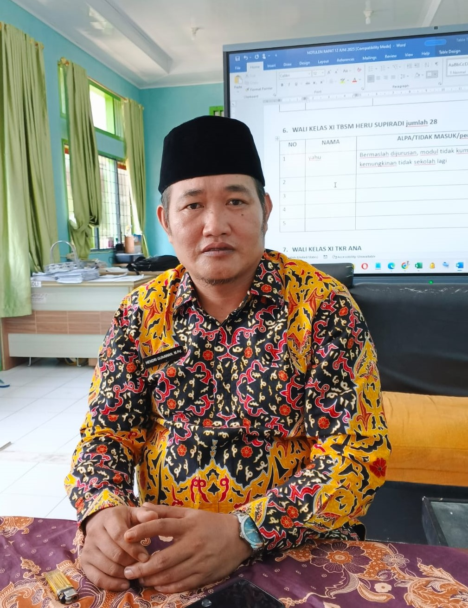

SMK Negeri 2 Lebong
NPSN 10703078 | Terakreditasi B
NPSN 10703078 | Terakreditasi B
Hendri Gunawan, M.Pd - Kepala SMK Negeri 2 Lebong

Kepala SMK Negeri 2 Lebong
"Pendidikan adalah kunci membuka pintu masa depan. SMK Negeri 2 Lebong berkomitmen mencetak generasi yang tidak hanya cerdas secara akademik, tetapi juga berkarakter dan siap bersaing di dunia kerja."
Assalamu'alaikum warahmatullahi wabarakatuh,
Salam sejahtera untuk kita semua.
Puji syukur ke hadirat Tuhan Yang Maha Esa, atas segala limpahan rahmat dan karunia-Nya, sehingga kita diberi kesempatan untuk terus berkontribusi dalam dunia pendidikan. Shalawat serta salam semoga tercurah kepada Nabi Muhammad SAW, keluarga, sahabat, dan para pengikutnya hingga akhir zaman.
Selamat datang di website resmi SMK Negeri 2 Lebong, pusat pendidikan kejuruan yang berkomitmen mencetak lulusan yang unggul, kompeten, dan berdaya saing tinggi. Kami berupaya menghadirkan layanan pendidikan yang adaptif terhadap kebutuhan dunia kerja dan era digital.
Seiring dengan perkembangan teknologi dan industri yang semakin pesat, SMK Negeri 2 Lebong terus berinovasi dalam metode pembelajaran, peningkatan fasilitas, serta penguatan kemitraan dengan Dunia Usaha dan Dunia Industri (DUDI). Kami percaya bahwa kolaborasi yang baik akan menghasilkan lulusan yang siap bersaing di tingkat nasional maupun global.
Kami mengundang seluruh calon siswa untuk bergabung dalam lima kompetensi keahlian unggulan:
Kepada para orang tua dan wali murid, kami ucapkan terima kasih atas kepercayaan yang telah diberikan kepada SMK Negeri 2 Lebong. Kami akan terus berusaha memberikan yang terbaik untuk pendidikan putra-putri Anda.
Semoga website ini memberikan manfaat, menjadi sarana komunikasi yang efektif antara sekolah dan masyarakat. Mari kita bersama-sama membangun generasi muda yang berkarakter, terampil, dan siap menghadapi masa depan.
Wassalamu'alaikum warahmatullahi wabarakatuh.
Tangua,
Hendri Gunawan, M.Pd
Kepala SMK Negeri 2 Lebong
"Alhamdulillah, berkat pendidikan di SMKN 2 Lebong jurusan TBSM, saya sekarang bekerja di AHASS Honda sebagai mekanik senior. Ilmu yang didapat sangat berguna!"
"Jurusan DKV membuka peluang saya untuk bekerja di studio desain grafis. Fasilitas dan guru-gurunya sangat mendukung perkembangan kreativitas."
"Setelah lulus dari jurusan Tata Busana, saya membuka butik sendiri. Dukungan dari sekolah sangat luar biasa dalam memulai usaha."